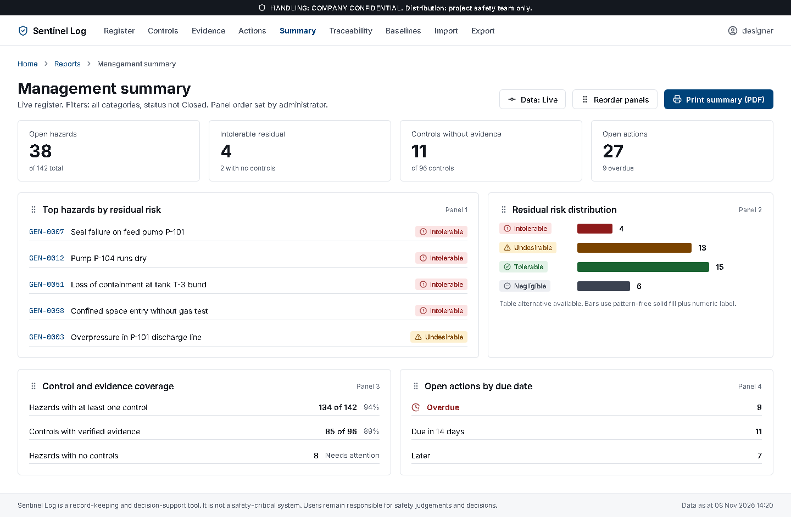

UC-12: View and print management summary. Actor: Decision-maker. The UC-24 report set below stays excluded
Main flow
- administrator opens the management summary; panels render in the configured order with top hazards, control coverage, evidence status, open actions, and residual distribution (req-28).
- administrator filters the summary by status open; the filter label names the filter on screen (req-26, req-28).
- administrator hides one panel on the panels page and shows it again; the summary reflects the round trip with the original order restored (req-28).
- administrator opens the printable summary; the single report carries the configured handling marking, dataset name, filter labels, and ranking rule (req-29, req-117).
Stills

Not in release: The excluded UC-24 report set is not in this release. No uc-24.html page exists.
Cited check phrases
- opens management summary